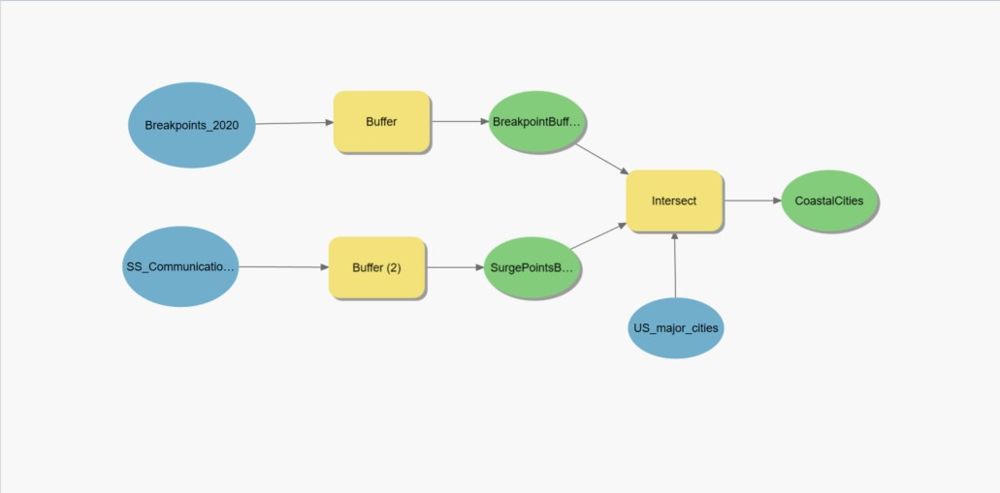
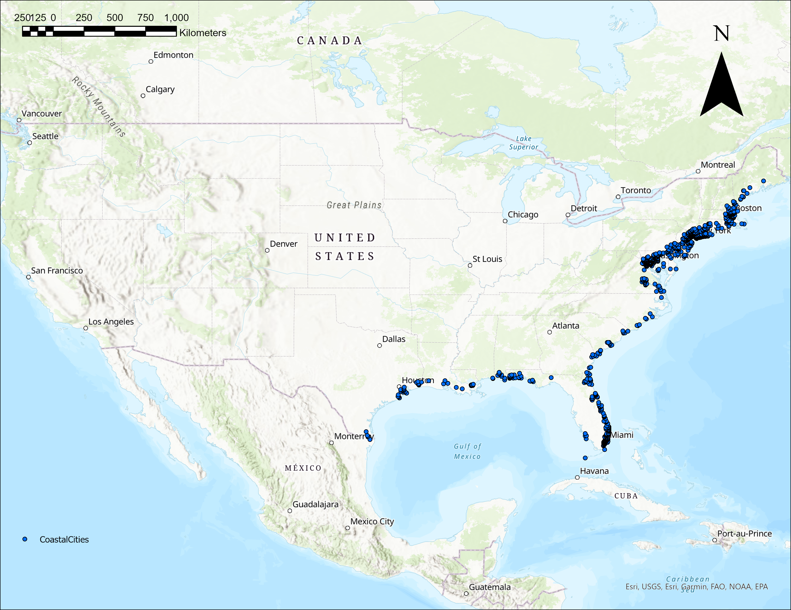
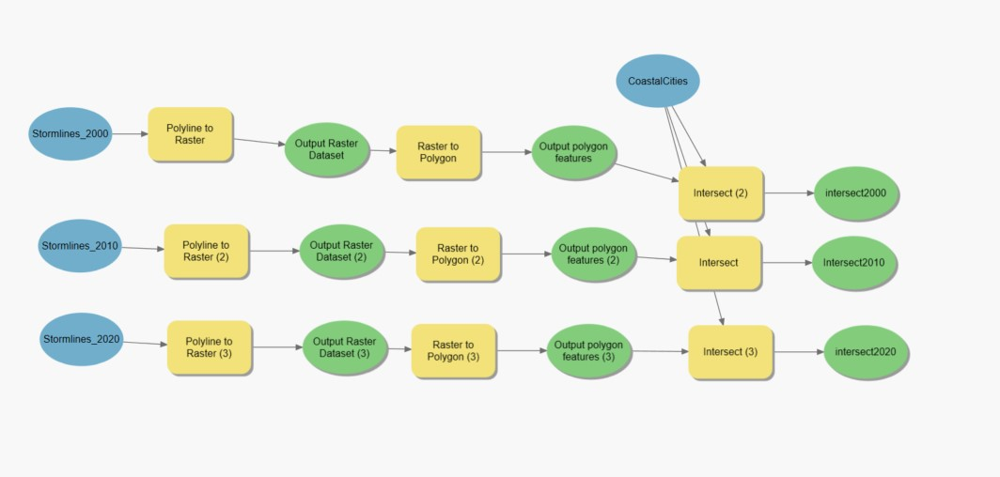
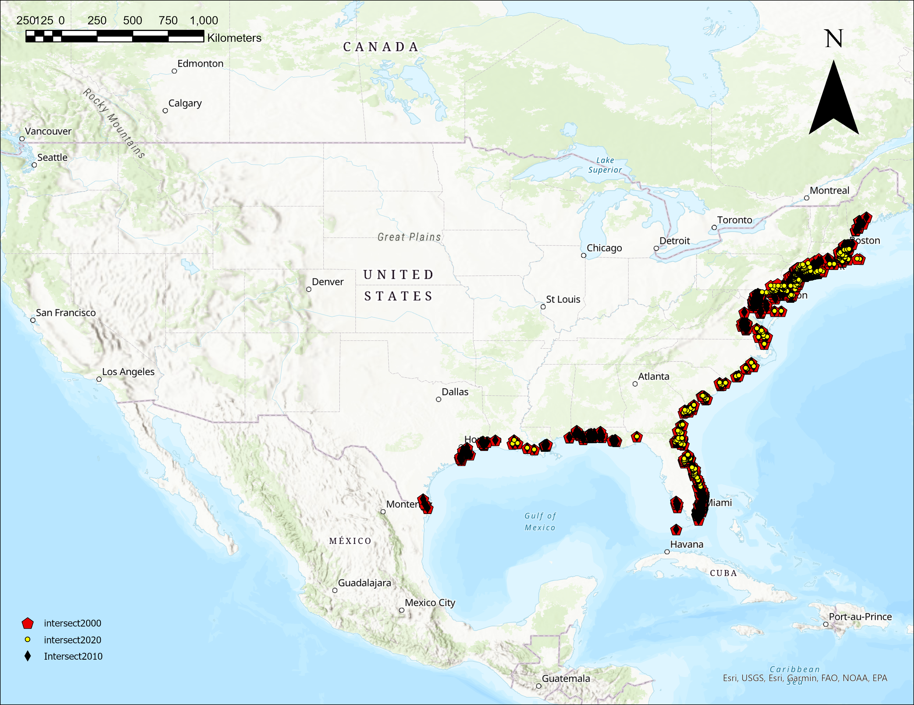
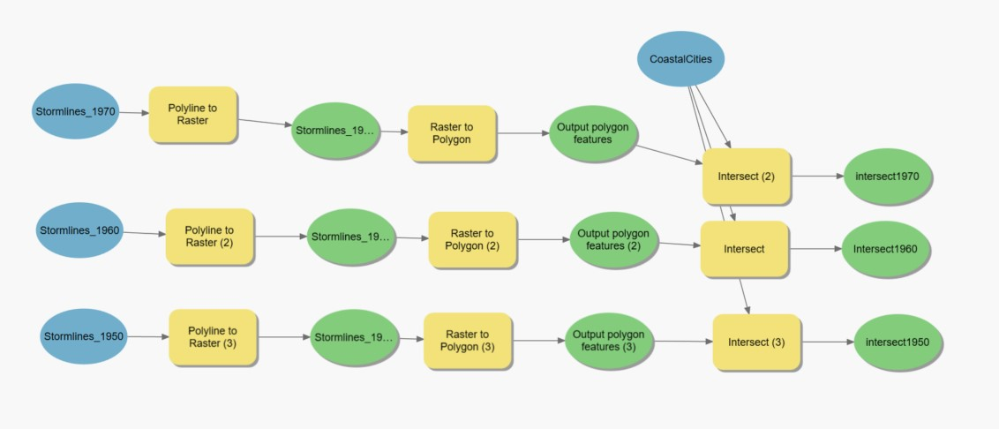
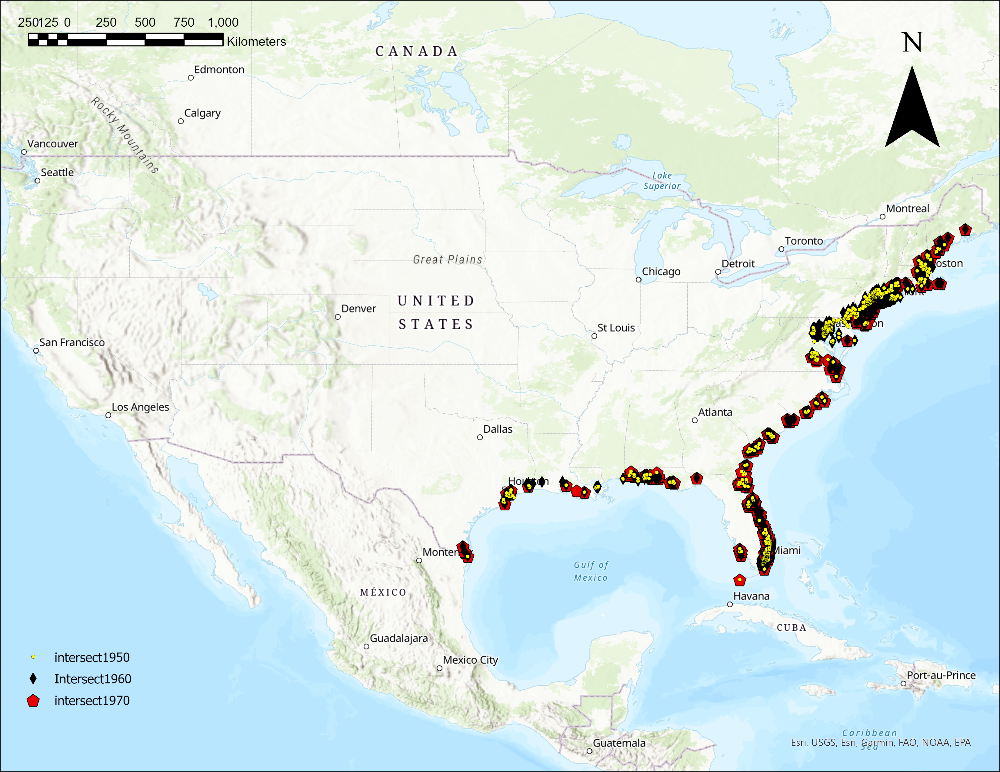

Mitchell Aitken, Julian Cramb, Jackson Cooper
Model builder to create two 50km buffer zones off of the surge warning zones and hurricane breakpoints.
 This map shows all of the locations that fall within 50km of either a breakpoint or storm surge warning.
Model builder that takes the polyline data and converts it into polygon data which can then be intersected with the coastal cities.
 This Map shows which coastal cities have had a hurricane pass directly through them in the years from 2000-2020, each 10 year segment is displayed by a different symbol.
Model builder that takes the polyline data and converts it into polygon data which can then be intersected with the coastal cities.
 This Map shows which coastal cities have had a hurricane pass directly through them in the years from 1950-1970, each 10 year segment is displayed by a different symbol.